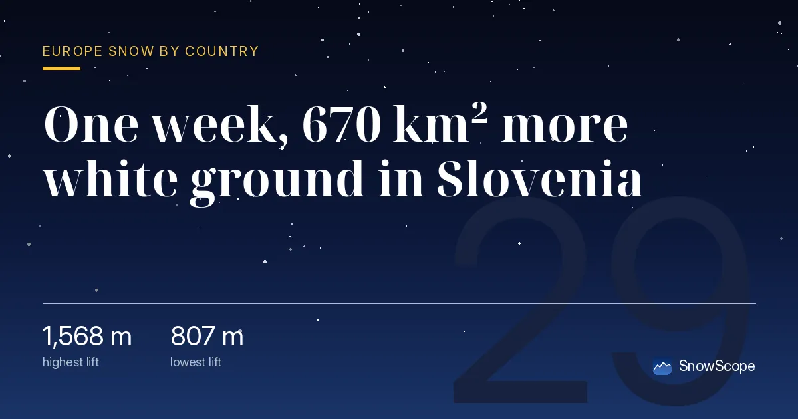
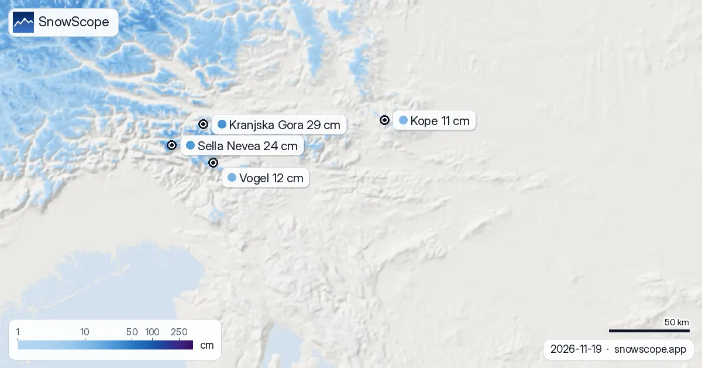
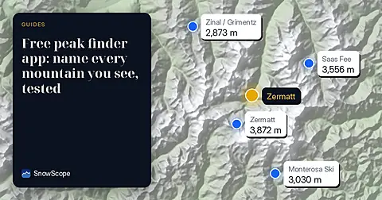

One week, 670 km² more white ground in Slovenia
Seven days ago about 90 km² of high ground was white in Slovenia; today it is 760 km², a gain of 670 km².
See the live snow forecast for Kranjska Gora in the SnowScope appSnow depth, powder alerts and the 3D map, free.
What changed this week
The new white ground is mostly in the middle heights, where a single cold spell can turn grass into a usable base.
Snow covers roughly 760 km² in Slovenia on 19 November, up 450 km² on yesterday. That is 10 % of the high ground we map in Slovenia.
| Day | White area | Most new snow in 3 days | Deepest resort |
|---|---|---|---|
| Monday 16 November | 1,130 km² | 1 cm | Gače |
| Tuesday 17 November | 490 km² | 2 cm | Velika planina |
| Wednesday 18 November | 260 km² | 2 cm | Vogel |
| Thursday 19 November | 760 km² | 30 cm | Kranjska Gora |

The week in numbers
Snow cover in Slovenia over the last days: 16 November 1,130 km²; 17 November 490 km²; 18 November 260 km²; 19 November 760 km².
The deepest resort changed hands 3 times this week.

Snow cover today
Think 1,400 m and higher for a white landscape. Last week's 90 km² has grown by 670 km².
Fresh snow
Three-day totals peak at 30 cm, around the Julian Alps, the Kamnik-Savinja Alps and Pohorje.
In the past day, up to 29 cm was added.
About 400 km² received at least 5 cm.
Shortlist for the weekend
The deepest snow of the country's resorts is at Kranjska Gora: 29 cm.
Next on the list: Sella Nevea (24 cm), Vogel (12 cm), Kope (11 cm) and Krvavec (8 cm).
At Kranjska Gora: 7 cm of fresh snow over three days, 9 cm more expected by Sunday 22 November.
Sella Nevea picked up 28 cm in the last three days and could add 19 cm by Sunday 22 November.
Snow lies on the upper slopes of 14 out of 27 resorts in Slovenia.
The rest of the shortlist: Vogel: 12 cm on top, 8 cm in three days, 17 cm expected; Kope: 11 cm on top, 2 cm in three days, 9 cm expected; Krvavec: 8 cm on top, 17 cm in three days, 22 cm expected.
What is coming
The week ahead could bring up to 35 cm, 17 cm of it in the next three days.
The snowiest day looks like Sunday 22 November, with up to 17 cm in the snowiest spots.
Further out, days 8 to 14 show up to 24 cm on the snowiest slopes.
From the valleys to the summits
Height makes the difference: between 500 and 1,000 m, under 1 cm on average, 1 % covered; between 1,000 and 1,500 m, under 1 cm on average, 13 % covered; between 1,500 and 2,000 m, 9 cm on average, 96 % covered; between 2,000 and 2,500 m, 25 cm on average, 100 % covered.
How this start compares
Resort by resort, today against a normal 19 November: Kranjska Gora: 0 cm at about 1,188 m, against 2 cm in a normal year; Sella Nevea: 16 cm at about 1,622 m, against 2 cm in a normal year; Vogel: 2 cm at about 1,152 m, against 1 cm in a normal year; Kope: 1 cm at about 1,120 m, against 0 cm in a normal year.
3 of these 4 resorts are above their usual depth for the date.
These depths are for one height on each mountain, below the top, so they read lower than the upper-slope numbers further down.
In past winters the best snow at Kranjska Gora usually came late March / early April.
The neighbours today
For comparison, the neighbours on the same day: Austria: 48 % white, deepest Stubaier Gletscher with 74 cm, up to 55 cm in the week ahead; Italy: 27 % white, deepest La Thuile ski with 66 cm, up to 84 cm in the week ahead.
Planning a day on the snow
Above 1,500 m the ground is almost fully white (96 % covered), so runs up there have a continuous base.
Below 1,000 m the slopes are still almost bare.
If you can choose the day, go after Sunday 22 November: the fresh snow then has time to settle and the roads to be cleared.
On the ground
The new snow freshens the upper slopes; lower down it may already be heavy or wet.
Keep an eye on the forecast: the coming snow could change the picture quickly.
Tips for skiers
- Read the local avalanche bulletin before going off-piste.
- Fresh snow on a cold base sticks badly: take care on steep slopes.
- Early-season snow is thin over rocks: ski the groomed runs first.
About these numbers
Resort snow depths are the deepest snow on the resort's upper slopes from the SnowScope snow model (about 1 km, run of 19 November); they are estimates for an area, not a measurement at one point. Station values are measurements on the date shown. Forecasts can change. Always read the official avalanche bulletin before going off-piste.
Cite this report
For research, teaching or the press: the numbers and charts are free to reuse under CC BY 4.0 with this citation.
SnowScope (2026), One week, 670 km² more white ground in Slovenia, https://snowscope.app/blog/en/2026/11/slovenia-snow-cover-gain-this-week-19-november-2026.html, accessed 2026-11-19
SnowScope (Atlas Labs). (2026, November 19). One week, 670 km² more white ground in Slovenia. SnowScope snow reports. https://snowscope.app/blog/en/2026/11/slovenia-snow-cover-gain-this-week-19-november-2026.html
BibTeX
@misc{snowscope2026sloveniasnowcovergainthi,
author = {{SnowScope (Atlas Labs)}},
title = {One week, 670 km² more white ground in Slovenia},
year = {2026},
month = nov,
howpublished = {\url{https://snowscope.app/blog/en/2026/11/slovenia-snow-cover-gain-this-week-19-november-2026.html}},
note = {Published 2026-11-19 12:51 UTC; accessed 2026-11-19}
}· CC BY 4.0 · Methods, data and tools →
Kranjska Gora: snow and temperature by height, this winter vs last (tools) →
Follow Kranjska Gora
Free: a message when fresh snow is coming, and the forecast every morning.
More snow reports

SnowScope's peak finder is a free peak finder app: point your phone at the mountains and it names the summits, with height, distance and climb time. Our tests: 98 % of the summits it lists are really in sight, and on real photos it corrected compass errors of up to 105° to 0.15°. Free with 3 names, every peak for $0.99 once.

Glacier 3000 leads Switzerland with 124 cm after 128 cm of snow in 72 hours. Snow cover jumped to 64% across the country on 20 November.

Six days of skiing from 191 EUR: we ranked ten cheap ski weeks in Europe by price, then checked 46 past winters to see where the snow is reliable.